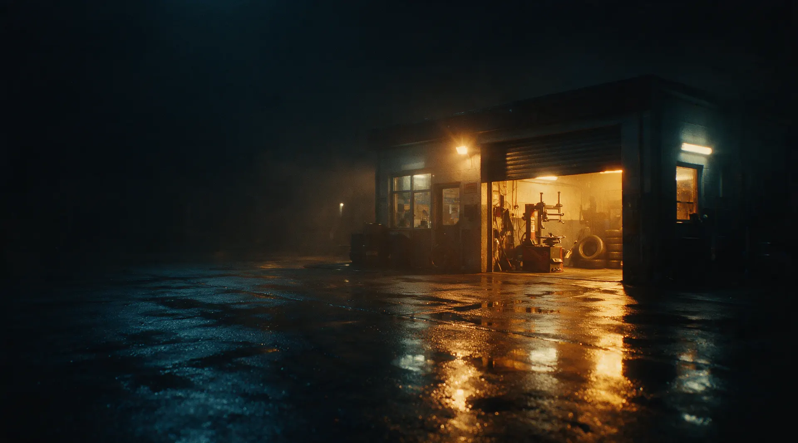
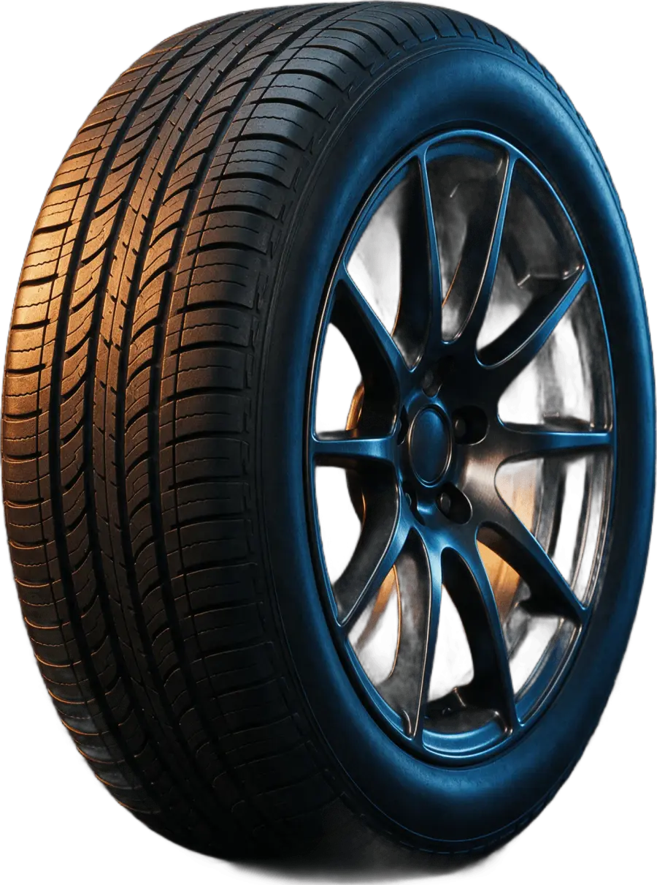
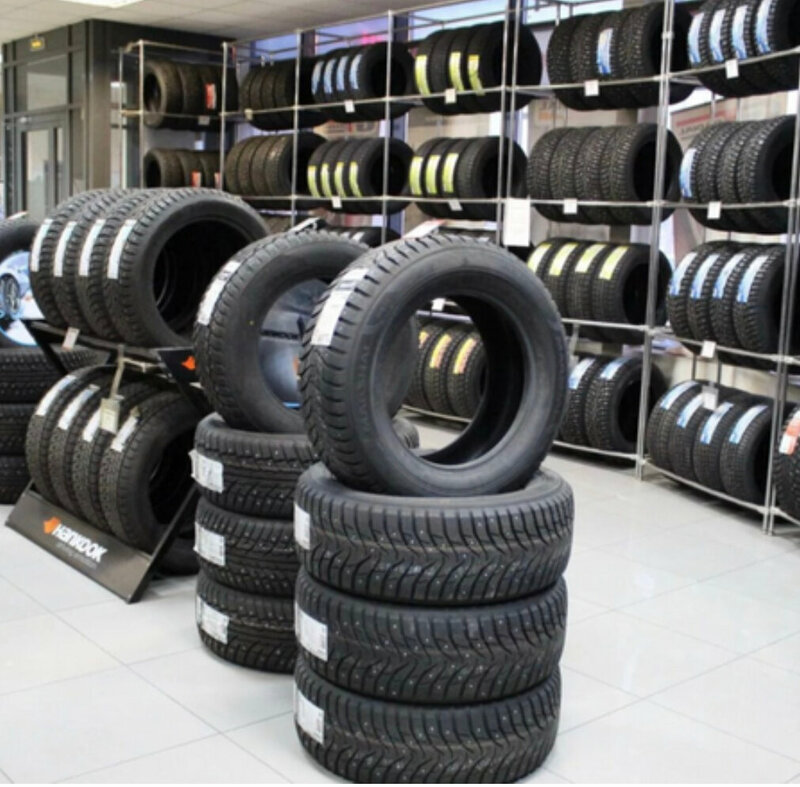
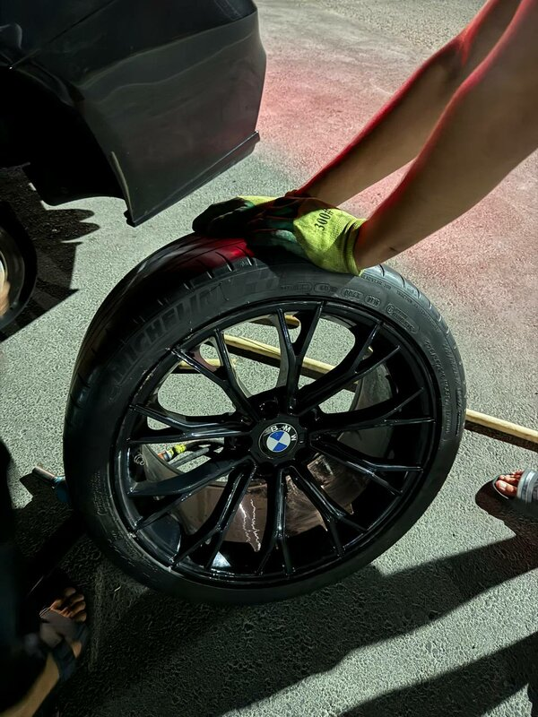

Шиномонтаж в центре Майкопа.
Балансировка, правка и прокатка дисков. Рейтинг 5.0 на Яндекс Картах.
Осень. Ночью уже +7
Когда среднесуточная температура опускается до +7 °C, летняя резина дубеет и тормозной путь растёт. Это и есть сигнал переобуваться, а не первый снег и очередь на два часа.
Зима. Давление и проколы
На морозе давление в шинах падает: проверьте его перед поездкой. Если колесо подтравливает или бьёт на скорости, заезжайте: мастера найдут причину.
Весна. Устойчивые +7
Возвращаем лето, когда плюс держится и днём, и ночью. Не откладывайте на последний момент: в первые тёплые выходные у всех шиномонтажей очередь.
Цены на основные услуги
Цены с карточки на Яндекс Картах, рядом указано примерное время работы. Точную стоимость для вашей машины назовём по телефону.
Балансировка
Примерно 5 минут.
140 ₽Шиномонтаж
Примерно 10 минут.
250 ₽Прокатка диска
Примерно 30 минут.
500 ₽Правка диска
Примерно 30 минут.
1 000 ₽Колёса
Цена за одну штуку.
500 ₽за 1 шт.

Что пишут на Яндекс Картах
-
«Была в городе, колесо начало подтравливать - обратилась в шиномонтаж по картам и не прогадала. Мастера Гурген и Сергей (отец и сын) быстро нашли причину и всё заделали. Очень внимательные - несколько раз перепроверили, чтобы нигде не травило. Отличный сервис!»
-
«Отличный шиномонтаж, по дороге до Майкопа были в четырёх шиномонтажах, и ничего не менялось. Мастера из Пушки разобрались, в чём проблема биения колёс, быстро и профессионально всё исправили. Очень добрые и отзывчивые мастера, всем рекомендую.»
-
«Упало давление в шинах из-за холода, заехал подкачать. Быстро всё сделали, огромное спасибо. Отношение топ, теперь только к ним буду ездить.»
Отзывы взяты с карточки на Яндекс Картах.

Что отмечают клиенты
- Находят причину, а не просто меняют колесоМастера разобрались с биением колёс и нашли, где колесо травит.
- Перепроверяют после ремонтаУбеждаются, что колесо больше нигде не подтравливает.
- Работают быстро и вежливоПодкачка и мелкий ремонт без долгого ожидания, отношение, по словам клиентов, «топ».
- Оплата картойПлатить можно картой.